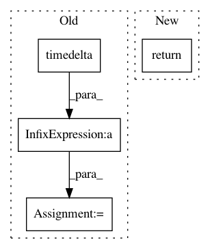

62c9d21484733b53fefd1569cf4b5776e7f87b4a,ner_v1/detectors/temporal/time/time_detection.py,TimeDetector,_get_meridiem,#TimeDetector#Any#Any#,667
Before Change
return "hrs"
else:
right_now = datetime.now(self.timezone)
after_twelve_hours = right_now + timedelta(hours=12)
def check(hour_value):
possible_datetime = right_now.replace(hour=hour_value, minute=mins)
if possible_datetime < right_now:
After Change
if current_hour > hours:
return PM_MERIDIEM
elif current_hour == hours and current_min > mins:
return PM_MERIDIEM
return AM_MERIDIEM
def _get_morning_time_range(self, time_list=None, original_list=None):
In pattern: SUPERPATTERN
Frequency: 3
Non-data size: 4
Instances
Project Name: hellohaptik/chatbot_ner
Commit Name: 62c9d21484733b53fefd1569cf4b5776e7f87b4a
Time: 2018-08-28
Author: anchan.viraj@gmail.com
File Name: ner_v1/detectors/temporal/time/time_detection.py
Class Name: TimeDetector
Method Name: _get_meridiem
Project Name: ScottfreeLLC/AlphaPy
Commit Name: bd77b4fac8210b1843e8eac33e9aa7f481305d6e
Time: 2017-02-14
Author: Mark.R.Conway@gmail.com
File Name: alpha_system.py
Class Name:
Method Name: system_pipeline
Project Name: samuelclay/NewsBlur
Commit Name: 6e93972ada9577ce41af8681de3f8a080f45f418
Time: 2011-11-01
Author: samuel@ofbrooklyn.com
File Name: utils/munin/newsblur_errors.py
Class Name:
Method Name: calculate_metrics